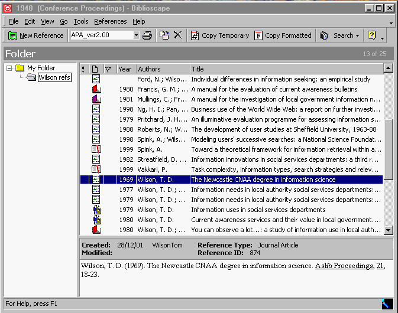
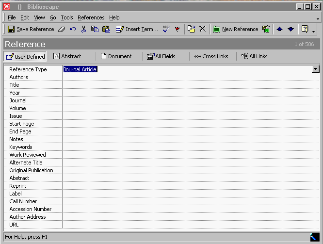
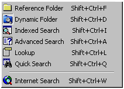
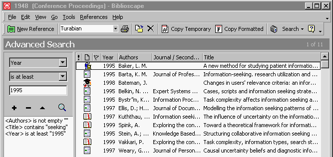
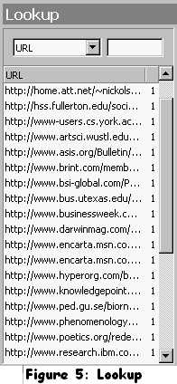
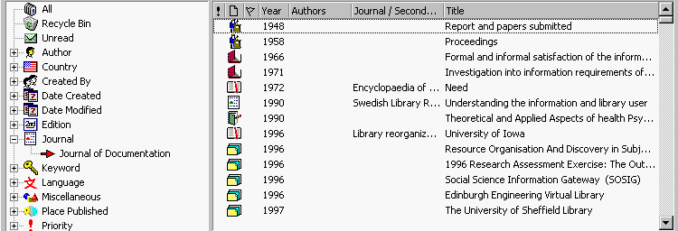
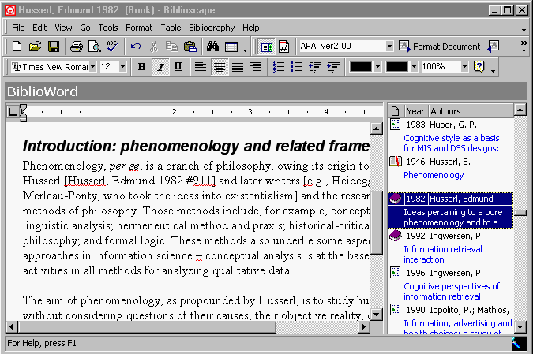

Biblioscape 5.0 Alpharetta, GA: CG Information, 2002.Download from Web site, http://www.biblioscape.com/. Prices: there are four versions of Biblioscape, priced from $79 to $699, and educational discounts are available on all - see the price list at the company Web site.IntroductionWith three bibliography or reference managers now being produced by the same software house (EndNote, Reference Manager, and ProCite - all produced by ISI ResearchSoft) it is a welcome change to find one that is produced independently. I came across Biblioscape through a reference on ZDNet's download page to its free, companion version, BiblioExpress. BiblioExpress is a simple reference manager, but I was attracted by one feature in particular, the ability to cut and paste an entire document into the system, and thereby keep together both references and source documents together. This is very useful when combing the Web for documents relevant to a paper and, if all you need is a simple system, BiblioExpress is a good choice. I suspect, however, that having once enjoyed the usefulness of BiblioExpress you will wish, like me, to sample the fully-developed system, Biblioscape. The package is acquired by downloading it from the Web site, after which you can try it out for a month. Once happy with it, you can register it at the Web site and receive a code that converts it to a full, registered package. Installation is straightforward and the 'Librarian' package - the most complete version - occupies about 9 Mb of space on your hard disc. Main features
Figure 1: Main window Figure 1 shows the opening window of Biblioscape: the database occupies the main pane, with, below it, the highlighted reference shown in the form in which it would appear in the bibliogaphy, when formatted according to the APA style. The style indication is shown in the small window in the menu strip immediately above the main panes. On the left is a pane showing the folders in use with the database. In this case there are only two: 'My Folder' contains the main database, while 'Wilson refs' is the result of carrying out a search on 'Wilson, T.D.' as an author. The small icons in the main pane indicate the document type of the reference. A new reference is added by hitting Ctrl-N, or the appropriate bit of the drop-down menu, at which point the window in Figure 2 pops up. 
Figure 2: New reference window As you can see, data entry can be pretty rapid with a form of this kind - I find it rather easier than with EndNote and Reference Manager - but that is a matter of personal preference. Note that one of the menu items is 'Document' - when you click on this a new page opens up into which you can paste any kind of document (including pictures), which allows you to keep, for example, Word documents, or text versions of Web pages in the same file as the reference itself. You will see that there is a URL field into which a link can be placed if you do not wish to copy the page, or if there are too many pages to copy. On the main screen you will see 'Search' on the menu bar and when this is clicked a drop-down window appears (Figure 3) showing the range of search options available, most of which are based on SQL searches: 
Figure 3: Search menu 
Figure 4: Advanced search 
Briefly, 'Reference folders' allow you to select sub-sets of references from your file; 'Dynamic folders' are saved searches that can be saved and updated; the 'Indexed search' requires the building of an index and is used when the SQL searches begin to lack performance - since this occurs when the records exceed 10,000 you are hardly likely to need it for the average dissertation!; the 'Advanced search' is an SQL query builder, so that you can set whatever criteria you wish for the search - Figure 4 shows an example of a query and the result; Figure 5 show the 'Lookup' feature, which simply creates a list of the items under whichever field you select - here, URL; the 'Quick search' feature allows you to create 'Glances' - in Figure 6 I have created one for 'Journal of Documentation' and the main window of the program shows the results; Finally, 'Internet search' takes you, within the program, to Biblioscape.com's search page, from which you can run an Internet search. Biblioscape differs importantly in one major respect from the competition and it is a difference with both positive and negative implications. It uses a real database engine, instead of ASCII files. This means that the files are much bigger: for example, in EndNote, my reference file of 469 items takes up 339Kb, while in Biblioscape the same file occupies 3.19Mb! On the positive side, however, the database system is more robust and very large databases can be maintained. 
Figure 6: Quick search Integration with word-processorsAs with other software of this kind Biblioscape provides integration with word-processors, specifically, Microsoft Word and WordPerfect. It functions in the usual way by adding a menu group to the word-processor menu system. To do this, the appropriate template file has to be transferred to the Word startup directory; once this is done, when Word is opened it has a new set of icons on the menu strip. Figure 7: Biblioscape icons in Word From left to right, the icons indicate: Search for a reference, Format paper, Unformat paper, Convert Greek, Format paper in HTML, and Unformat from HTML. The HTML format feature is an interesting one - it generates a link between citations in the text and the references in the bibliography. (On my system this is something of an embarrassment of riches, since the icons for Reference Manager and EndNote are already taking up a significant share of the landscape! Some day I must decide which to make my main system.) Citations are inserted in the text in two ways - either by using the 'Search ref' icon and inserting a name or phrase in the search box, or by locating the appropriate reference, copying it and then inserting in the text. By either method, it is not the full reference that is inserted, but a reference key, taking a form similar to that of other reference managers. For example, from the sample file provided with the package, a citation of Derbyshire, K. (1997). Issues in advanced lithography. Solid State Technol., 40(5), 133-134 is copied into the text of the paper as [Derbyshire, Katherine 1997 #84]. By clicking on the 'Format paper' icon, a document is created with the correct citations and the bibliographic references at the end of the text, the latter in a form determined by your chosen style. Biblioscape also has full integration with Microsoft Word, in the form Biblioword, which integrates more closely with the reference file. Figure 8 shows the window occupied by Biblioword and you can see, in the pane at the right, the contents of my database. To create a citation in the document, I simply locate reference in the file, right click on it, and then on 'Insert temporary citation'. The inserted citation is seen in the text. 
Figure 8: The Biblioword screen Biblioscape is able to format a paper in HTML for immediate Web publishing. The program generates hyperlinks between citations and their corresponding references in the bibliography. Styles and style editorIn addition to the almost 300 styles provided (most of them for science journals), there is a style editor, which enables you to make your own styles. As none of the LIS journals (such as Information Research, Journal of Documentation, JASIST, Library Quarterly, Journal of Information Science, etc.) is represented here, I shall have to get round to making my own. (I wonder why it is that none of these packages include styles for journals in our field? I would have thought that since librarians and teachers in the field must be among the main advocates for them and, in consequence, ought to benefit.) My first attempt at style creation was frustrated - the program is not very intuitive at this point and not very forgiving, either. It came up with an impenetrable error message of the worst kind, i.e., "DBISAM Engine Error # 9729 Duplicate key found in the index " of the table 'journal'", instead of something intelligible like, "You appear to be trying to create an entry for something that already exists - re-start Biblioscape and try again." However, the Help system does say, "If you encounter any difficulties making a new style, please send us an email at support@biblioscape.com. We will make one for you free of charge.", which is a very fair offer, so perhaps I shall do that instead. ConclusionBiblioscape is a fully-featured reference organizer and bibliography generator that competes fully with the established packages in the field. The only drawback for the individual user, unless s/he keeps the database on an institutional server with generous file space allowances, is the size of the files. I imagine that I shall use the system mainly for Web-related materials, which I can download into the database. Professor Tom Wilson |